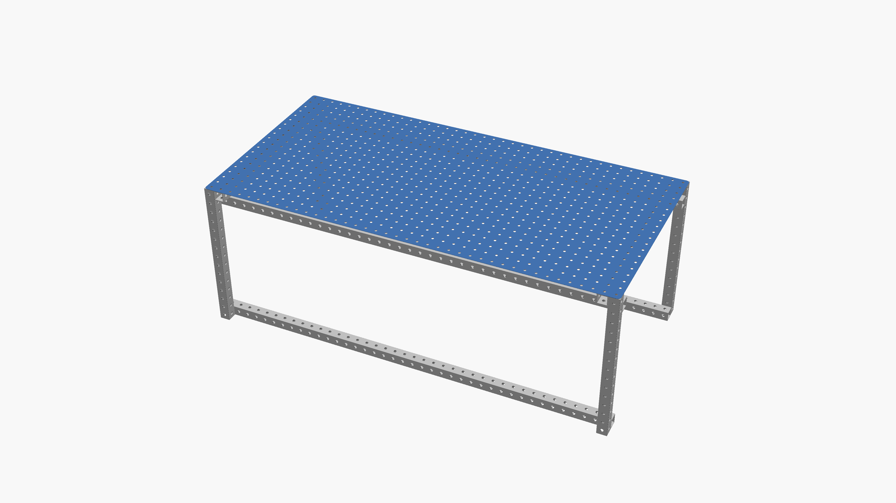

tables revision 3739
^ Projects infobox ^^
| image | Coffee-table.scad.png |
| designer | [[user:tim|Timothy Schmidt]] |
| date | 2018 |
| tools | [[wrenches|Wrenches]] |
| parts | [[frames|Frames]], [[nuts|Nuts]], [[bolts|Bolts]], [[end_caps|End caps]], [[plates|Plates]] |
| techniques | [[tri_joints|Tri joints]], [[shelf_joints|Shelf joints]] |
Challenges
Approaches
Ken Isaacs says about the work table (or 24” Module, as he called it): “the best way I know to get into Living Structures is to make a 24” cube. It’s a chance to perfect all the operations involved in larger Structures & the modules are really useful when you work with wood or metal at home. The units make good tables to mark & saw plywood & 2x2’s on. They are fine, stable tool stands for the little electric drill press. The 24” module is a good workbench for Josh. Henry & I use several as desks, typewriter tables & drawing board bases. You can bolt several modules together for larger work surfaces or small painting scaffolds.”


Interoperability
Development targets
- Drawers - Joy Livingwell configuration (outset front vertical posts, unmodified sheet stock)